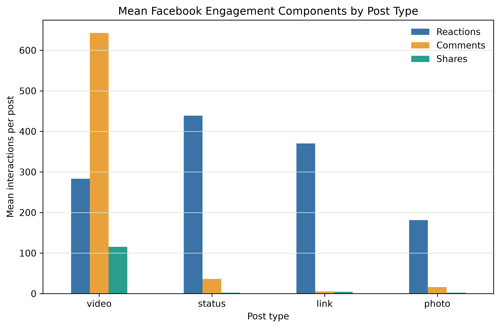

Mean total engagement for video posts, the largest observed post-type mean.
CSE628 · Summer 2026
7,050 anonymized posts, seven reproducible graph exercises, and one transparent analytical pipeline.
S. M. Monowar Kayser · 253-25-019 · Daffodil International University
Mean total engagement for video posts, the largest observed post-type mean.
Overall median engagement, compared with a mean of 494.50.
Weighted betweenness of Recommendation Systems in the synthetic domain graph.
